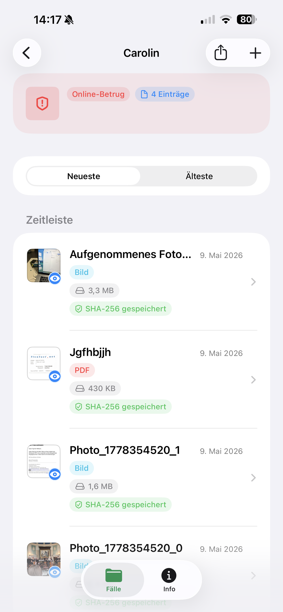
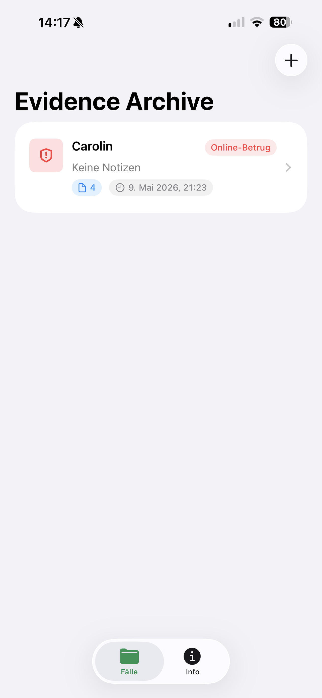

Private Fallakten fuer Dokumente und Nachweise.
Evidence Archive sammelt Fotos, PDFs, Scans, Dateien und Notizen in strukturierten Fallakten auf iPhone und iPad.
Die App speichert Metadaten, Tags, Quellen und SHA-256-Hashes fuer eine nachvollziehbare lokale Dokumentation.

Funktionen
Fallakten
Erstelle private Akten mit Kategorien, Notizen und einer chronologischen Zeitleiste.
Import und Kamera
Importiere Dateien und Fotos, erfasse neue Bilder und scanne Dokumente mit der Kamera.
Integritaet
Speichere SHA-256-Hashes, Dateitypen, Dateigroessen, Quellen, Tags und Notizen.
Screenshots

SHA-256-Hashes koennen helfen, die Dateiintegritaet nach dem Import zu pruefen. Evidence Archive bietet keine Rechtsberatung und garantiert nicht die Zulassung von Nachweisen in rechtlichen Verfahren.